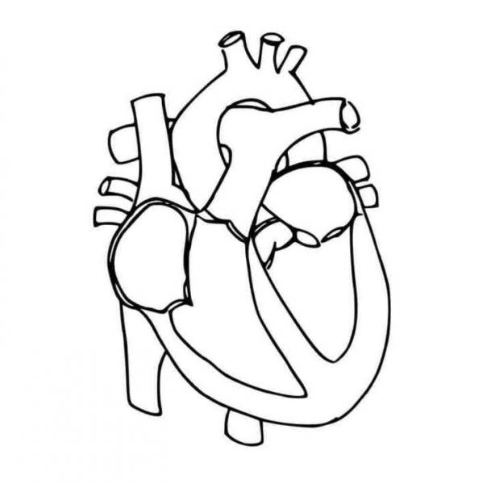

| Beneficios de un transplante de corazón | |
| El trasplante de corazón prolonga la vida de las personas que de otra manera morirían. Cerca del 80% de los pacientes a quienes se les practican trasplantes de corazón siguen vivos 2 años después de la operación. A los 5 años, el 70% de los pacientes aún estarán vivos después de este trasplante. | |
| Mejora la calidad de vida: La mayoría de las personas pueden tener una buena calidad de vida después de su trasplante. Pueden estar activas, tener una vida social y volver a trabajar. Además muchos pacientes experimentan una mejoría en su capacidad física, reducción de síntomas como la fatiga y la falta de aliento, y una mayor tolerancia al ejercicio. | |
| Elimina la necesidad de tratamientos médicos continuos: Los pacientes con enfermedades cardíacas avanzadas suelen requerir tratamientos médicos intensivos y continuos, como medicamentos, dispositivos de asistencia ventricular o cirugías frecuentes. El trasplante de corazón puede eliminar la necesidad de estos tratamientos, lo que mejora la calidad de vida y reduce la carga económica asociada. |  |
| Propuestas de mejora de un transplante de corazón | |
| Existe un problema en la donacion de organos, y es la escasez de donantes potenciales, esto por inseguridad o miedo. Una propuesta seria promover la donacion y concientizar que esto ayuda a personas que sufren y al no conseguir un donante fallecen. | |
| Otra propuesta podria ser la inversion de las empresas o gobiernos en la mejora e investigacion para mejorar la compatibilidad y reducir el rechazo del corazon. Porque esto puede causar el mal funcionamiento del corazon y en consecuecia problemas, enfermedades e incluso la muerte. | |
| Hay muchas personas que al no conseguir un donante rapido, pueden recurrir a alternativas poco legales esto afectando a la seguridad de las personas. Mi propuesta sería hacer un programa mas organizado para la llegada rapida de corazones a las personas que lo nesecitan. | |